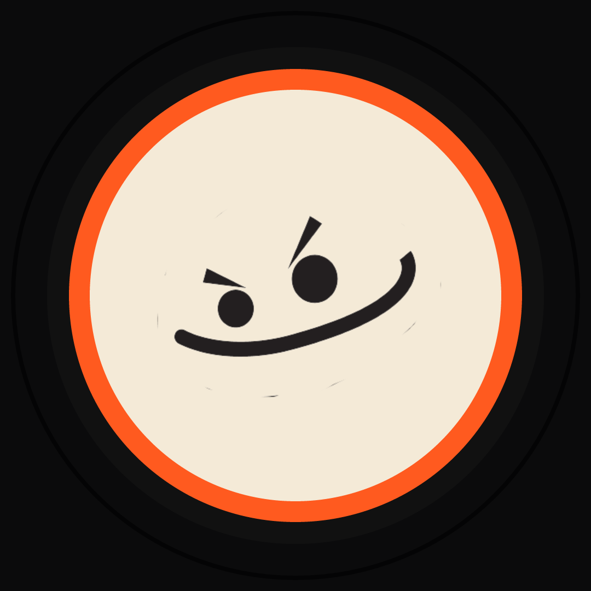
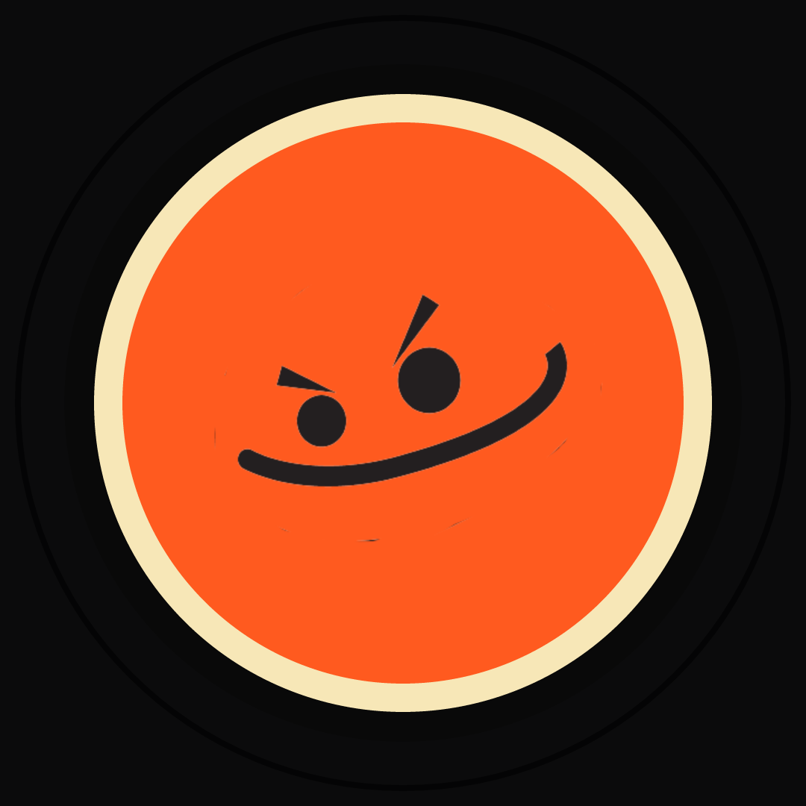
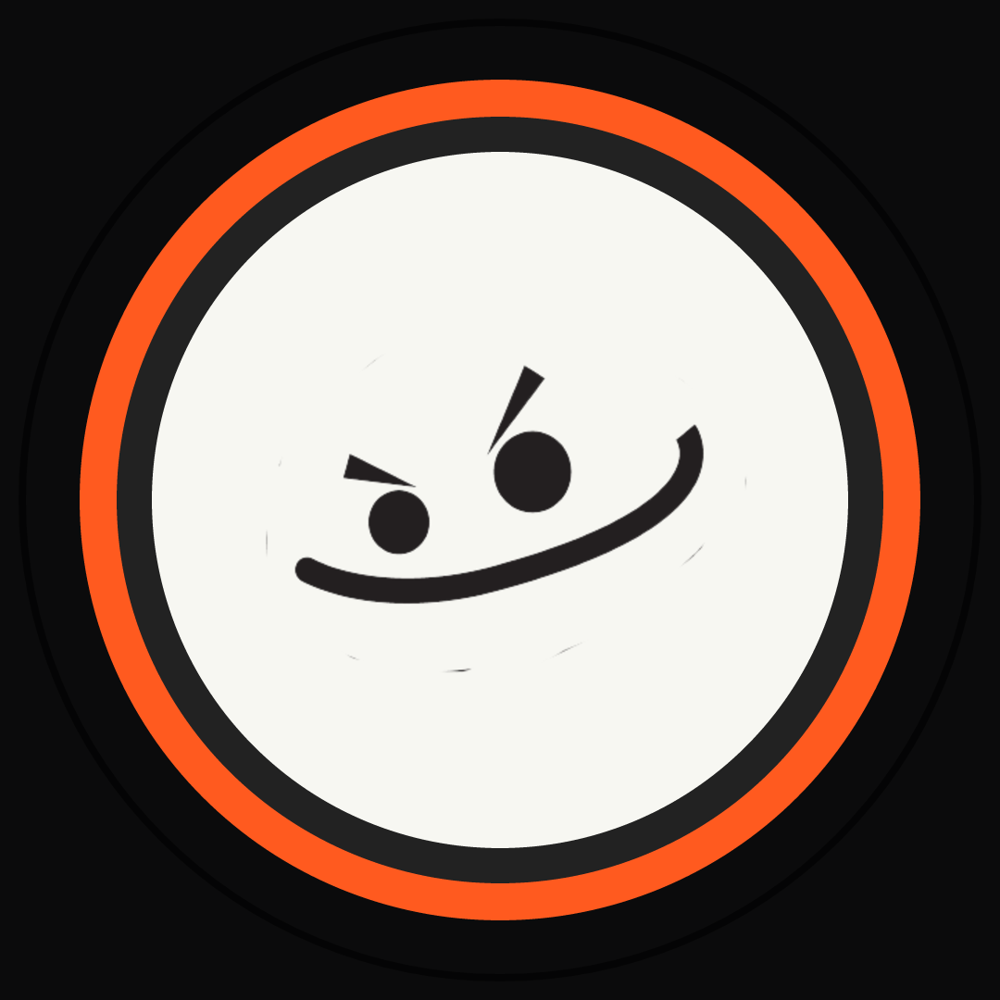

Bad Boys Avatar Background Test
Purpose: keep the real Josh-provided face mark, but make it survive TikTok’s tiny circular avatar crop and dark UI. Recommendation: bone-circle.

Bone circle — safest TikTok contrast
Best default: warm, high contrast, still mischievous.
bone-circle.png / bone-circle.svg

Orange warning — loudest small-icon read
Most aggressive; good for signal, can feel more mascot/sticker.
orange-warning.png / orange-warning.svg

White sticker — cleanest app UI visibility
Clean and platform-safe; a bit less “Bad Boys” energy.
white-sticker.png / white-sticker.svg